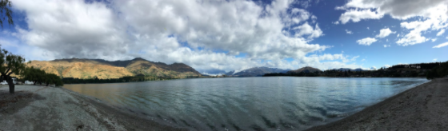
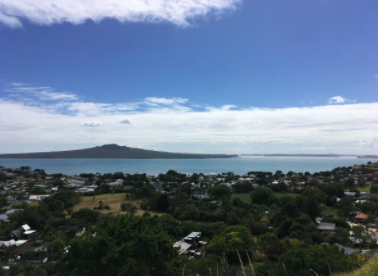
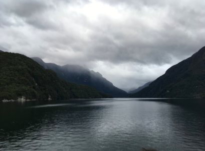

When an Internship Abroad Isn't

I should be in Aotearoa New Zealand right now. It is currently June of 2020,
the middle of a summer which will be memorable for the rest of my life. Before
I finalized my (incredibly expensive) flights to New Zealand, my parents wanted
me to check with the travel agency to ensure that I would not pay full price
for the tickets if I needed to delay or cancel them for any reason. At the
time, I thought this was silly--I had been looking forward to studying abroad
for years and diligently planning this experience for months, and nothing
could change that. They reminded me that I could get very sick, or we could
have a family emergency...not things I wanted to think about, but the
possibility was real. I reluctantly agreed and confirmed that the flights
I booked were insured.
I never could have imagined that during the semester I chose to study abroad, there would be a pandemic; a deadly virus that had led to an outbreak before I even left, actually, but not something that I ever thought would impact me in any way. Against all odds, I ended up studying abroad during a global crisis.
After two and a half incredible months in New Zealand, I was sent home to the United States. This experience was cut short by the COVID-19 pandemic, but hopefully not defined by it; it would be a shame to focus on its end rather than its duration. This is my unexpected story, from Auckland to Boston.

